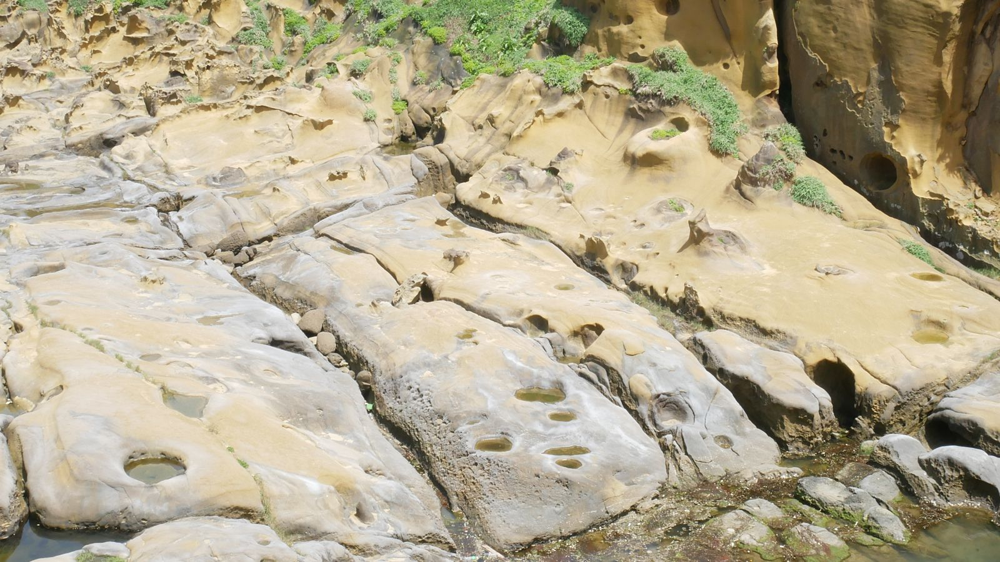
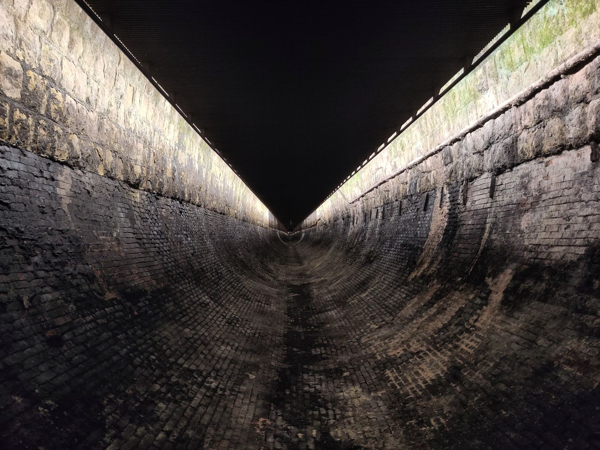

지룽 허핑다오·산댜오링 터널, 하루에 묶어 갈 수 있을까?
터널은 예약 시간과 휴무일, 허핑다오는 문 닫는 시간 — 이 두 가지만 맞추면 하루 동선이 깔끔해져요.
게시
"지룽 허핑다오랑 산댜오링 터널을 하루에 같이 볼 수 있을까?" 루이팡(瑞芳)·허우통(猴硐) 쪽 일정을 짜다 보면 자주 나오는 질문이에요. 허핑다오 지질공원(和平島地質公園) 공식 사이트, 신베이시 관광국의 산댜오링 생태우호 터널(三貂嶺生態友善隧道) 안내, 대만철도·지룽시 버스 공식 정보를 바탕으로 2026년 10월 기준으로 정리해봤어요.
01 · 허핑다오와 산댜오링 터널, 한눈에 비교하기
| 구분 | 산댜오링 생태우호 터널 | 허핑다오 지질공원 |
|---|---|---|
| 입장 | 무료, 온라인 사전 예약 필수 | 유료(어른 NT$120), 온라인 전자 티켓 가능 |
| 운영 (2026년 10월 기준) | 08:30~16:30, 마지막 입장 16:00 | 5~10월 08:00~19:00, 11~4월 08:00~18:00(문 닫기 1시간 전 매표 마감) |
| 휴무 | 매주 화요일(연휴엔 운영) | 연중무휴(태풍 등 공지 시 휴원) |
| 가까운 교통 | 허우통역·무단역 | 지룽시 버스 101·102번, T99 '和平島公園' 정류장 |
동선은 오전에 산댜오링 터널, 오후에 허핑다오 순서가 무난해요. 터널은 오후 4시면 입장이 끝나고 예약한 시간대에 맞춰야 하지만, 허핑다오는 저녁까지 열려 있어서 뒤로 미루기 쉽습니다. 다만 화요일에는 터널이 쉬니 날짜부터 확인하세요.

02 · 산댜오링 터널 예약과 입구 찾기
예약은 공식 사이트에서, 14일 전부터 1시간 단위 시간대마다 정원이 있고, 다 차면 현장 대기는 받지 않아요. 아이·어른 모두 인원에 넣고, 받은 QR 코드를 입구에서 보여주면 됩니다. 입장료가 없으니 유료 티켓을 파는 곳은 피하세요.
산댜오링역이 아니라 허우통역·무단역 이름과 달리 산댜오링(三貂嶺)역에는 터널로 나가는 통로가 없어요. 입구는 루이팡 쪽 허우통역 방면(侯三公路)과 솽시 쪽 무단(牡丹)역 방면 두 곳입니다.
역에서 입구까지는 지도 앱 필수 역에서 입구까지 가는 길이 헷갈린다는 이야기가 많아요. 구글맵 도보 경로를 미리 저장해 두거나, 허우통역·무단역 앞 YouBike를 이용하세요.
한쪽으로 들어가 반대쪽으로 나오기 전체 약 3.19km라 걸어서 지나간 뒤 반대편 역에서 기차를 타면 왔던 길을 되돌아가지 않아도 돼요.
슬리퍼·하이힐은 금지 바닥이 틈이 있는 철망 구조라 슬리퍼와 하이힐은 신을 수 없어요. 산댜오링 쪽에는 높은 고가 구간도 있어 고소공포가 있다면 미리 감안하세요.

03 · 지룽 허핑다오 공원 가는 법과 보관함
지룽역 앞 버스 101번 지룽역 옆 지룽 버스터미널(基隆轉運站)에서 101번을 타고 '和平島公園' 정류장에 내리면 걸어서 5분 정도예요. 102번, 관광버스 T99 濱海奇基線도 같은 정류장을 지나요.
전자 티켓으로 줄 없이 공식 사이트에서 전자 티켓을 사 두면 매표 줄을 서지 않아도 돼요. 입장권으로는 바위 보호구역과 아라바오만(阿拉寶灣)에는 들어갈 수 없습니다.
보관함·샤워실은 동전식 방문자센터와 샤워실에 동전 보관함(1회 NT$20)이 있고, 샤워·드라이어도 유료예요(2026년 10월 기준). 해수 수영장은 매일 13:00~14:00에 쉬어요.
04 · 캐리어는 루이팡역에 맡길까
루이팡역 코인로커 대만철도 안내 기준 루이팡역에는 자동 보관함(存物箱)이 있지만, 짐을 맡아 주는 수하물 창구(行李房)는 공사로 쉬고 있어요. 보관함은 칸 크기가 정해져 있어 큰 캐리어는 안 들어갈 수 있어요.
역 앞 가게 짐 보관 역 앞 가게에 캐리어를 맡겼다는 여행자도 있어요. 맡기기 전에 요금과 찾는 시간을 가게에 직접 물어보세요.
지룽역 보관함도 선택지 지룽역에도 자동 보관함이 있어요. 허핑다오를 마지막에 보고 지룽에서 타이베이로 돌아간다면 지룽역에 맡기는 편이 동선이 짧아요.
지룽↔루이팡 기차는 시간표 확인 열차에 따라 바두(八堵)역에서 갈아타야 할 수 있어요. 대만철도 공식 앱이나 홈페이지에서 출발 전에 확인하세요.
보관함·가게 보관 요금은 현장마다 달라요. 요금은 방문 전 공식 안내를 확인하세요.
루이팡에서 허우통까지 기차 타는 법과 시간표 보는 법은 핑시선 기차 타는 법 글에 정리해 두었어요. 캐리어를 들고 근교를 옮겨 다닐 계획이라면 예류 지우펀 버스·캐리어 글도 함께 보세요. 루이팡에서 가까운 지우펀까지 들를 생각이면 지우펀 맛집 지도와 지우펀 카페 목록에서 쉬어 갈 곳을 고르고, 바다 보이는 찻집은 SF Station처럼 상세 페이지에서 위치를 확인해 보세요.
지도에서 지우펀·루이팡 맛집도 확인해보세요
터널과 바다를 본 뒤 들를 지우펀 카페와 맛집을 지도에 찜해두세요.